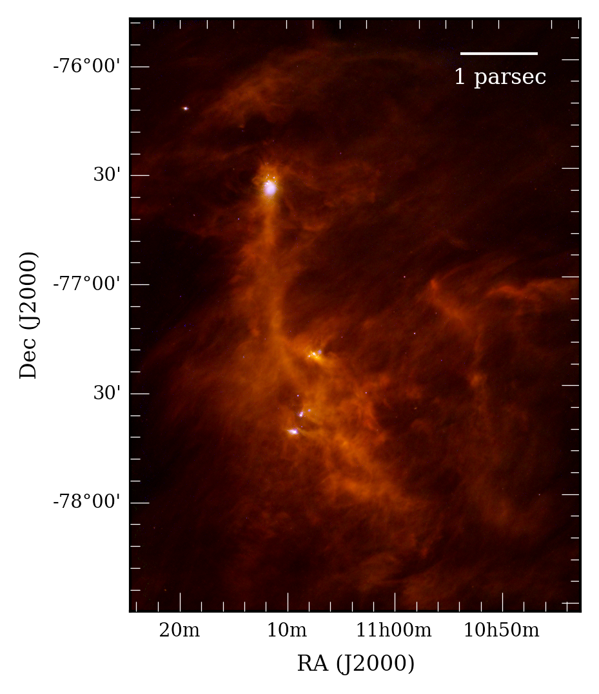

My research focusses on the disks of gas and dust that are surround newborn stars. Planets form in these disks, and their characteristics are crucial to understand the huge diversity of planets that we have just started to unveil. By studying these disks at different wavelengths and comparing them with physical models, we can learn about their structure, evolution, and their connection with planetary formation. However, the evolution of these objects takes millions of years, so it can´t be studied directly. Instead, I analyze the statistical properties of large samples of disks in different regions of the sky with different ages to try to understand this process and its connection with planetary systems. You can find a summary of some of my research below.
My research interests include protoplanetary and debris disks, exoplanets, and planet formation. I am also a huge fan of Python, and am also interested in Bayesian statistics, data mining and visualization, and machine learning.
The evolution of protoplanetary disks in the solar neighborhood
The evolution of protoplanetary disks determines the properties and fates of future planetary systems. However, these disks last for millions of years, and waiting that long is not practical. The way to by-pass this problem is to look at young star-forming regions across the sky with different ages. By looking at the fraction of disks as a function of time, we can infer how they evolve.
Different works have addressed this issue by combining previous studies of diverse star-forming regions. However, samples compiled in that way are very heterogeneous, and have different sensitivity and completeness levels. Depending on the methods used, they may also contain a significant number of background sources (i.e., not associated with the region itself) and, as a result, these samples may be biased or suffer from important contamination levels.
To overcome this issue, I compiled a large sample of young stars in 22 young, nearby star-forming regions. I then gathered data from different surveys and catalogs, covering from the near-optical to the mid-infrared for each object. After several quality checks and homogenizing steps, the result is a large and consistent sample that allowed us to derive accurate disk fractions for all these regions. We did so by analyzing infrared excesses produced by disk around stars. We robustly confirm that protoplanetary disks disperse during the first 10 million years of their lives, and find evidence of the disk clearing occurring from the inside out. These results were presented in Ribas et al. 2014.
The evolution of protoplanetary disks may also depend on factors other than simply time. A good example is
the host star of the disk: the strong radiation fields and stellar winds around high-mass stars could disperse
circumstellar disks faster than in the case of the low-mass stars. If this is the case, then the planets around
high-mass and low-mass stars may have different properties. Using the large sample of young stars mentioned before,
we found statistically robust evidence for a faster dispersal of protoplanetary disks around massive stars. Because
planets form in these disks, this difference may produce different exoplanetary populations around low- and
high-mass stars, and it may help explaining the apparent paucity of hot Jupiters around massive stars. We presented
these results in Ribas et al. 2015.
{kind=link}
Transitional disks in Chamaeleon as seen by Herschel
Transitional disks are protoplanetary disks with gaps and cavities in them. They are extremely interesting because these gaps could be carved by newborn planets, and hence may be the perfect scenario to study in-situ planet formation or even detect planetary embryos.
|  |
{kind=link}
Part of my research has focused on studying transitional disks with the Herschel Space Observatory. Herschel covered the far-infrared part of the spectrum (from 70 to 500 microns) and probed the emission from the cold, outer regions of disks. In Ribas et al. 2013, we analyzed Herschel observations of transitional disks in the Chamaeleon-I star-forming region and showed the potential of these data to identify transitional sources. We also found hints of the transitional disks in this regions being brighter in the far-infrared than protoplanetary sources, which could point to more exposed disk walls because of cavities, or even some piling-up of mass caused by the gravitational influence of planets.
To further investigate what these new data can tell us about transitional disks, we studied them using disk models and
some statistics. We found that Herschel data can improve the estimate of the cavity sizes in these disks and, more
interestingly, can also help narrowing down the possible dust mass in the system, a crucial parameter for the
planet formation process. Given the large amounts of data in the Herschel Science Archive, this opens new
possibilities to study large samples of protoplanetary disks in the future. Our study can be found in
Ribas et al. 2016.
 Spectral energy distribution of the transitional disk T25. Blue points and orange squares are previous and
new Herschel data. Solid lines represent disk models, in blue the results with the previously existing data alone,
and in red when including Herschel data. The smaller spread in the red models shows how Herschel data inform the
models about possible parameters, in this case better constraining the disk inner radius and dust mass (Ribas et
al. 2016).
Spectral energy distribution of the transitional disk T25. Blue points and orange squares are previous and
new Herschel data. Solid lines represent disk models, in blue the results with the previously existing data alone,
and in red when including Herschel data. The smaller spread in the red models shows how Herschel data inform the
models about possible parameters, in this case better constraining the disk inner radius and dust mass (Ribas et
al. 2016).
Searching for warm debris disks around transiting planets systems
Debris disks are the remnant of planet formation, and can be found around older stars. They are similar to our Kuiper belt, consisting mainly of asteroids, planetesimals, and cold dust located far from their host star (several tens of astronomical units). Because they are that cold, they emit in the far infrared regime. However, there is a small fraction of these disks which are detected in the mid infrared, meaning they their components are hotter (and hence closer to their star) than in typical debris disks. These “warm” debris disks are exciting, because dust can’t exist so close to the star for long periods of time: it is either engulfed or pushed away. Therefore, this dust must be transient, maybe produced by collisions of bodies in the inner regions of the syste, which we can detect as mid infrared emission in them. Even more interesting, these collisions could be the result of the dynamical excitation of an asteroid belt analog by planets in these systems.
In Ribas et al. 2012 we searched for these warm debris disks around all the known stars with transiting planets, plus the planetary systems candidates from the Kepler mission. By including mid infrared data from the WISE survey, we identified 13 stars with promising mid infrared excess at 12 and/or 22 microns and compared the estimated location of the dust with the orbits of the planets/planetary candidates in these systems.